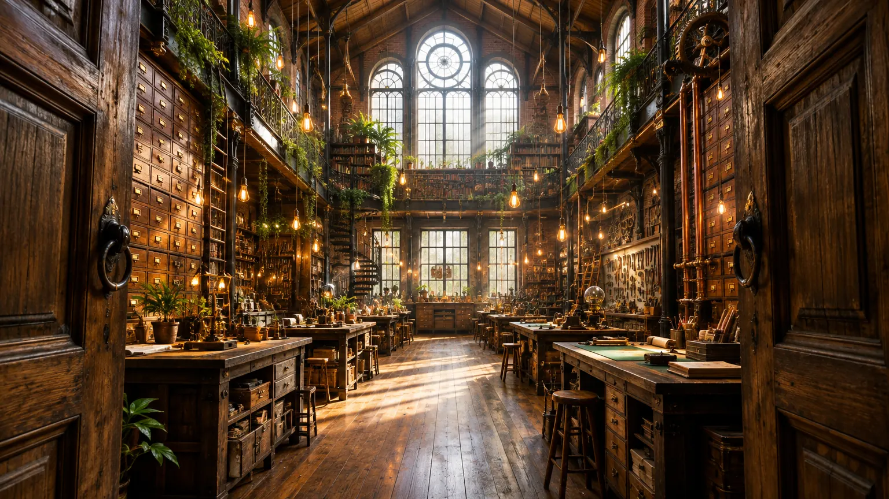
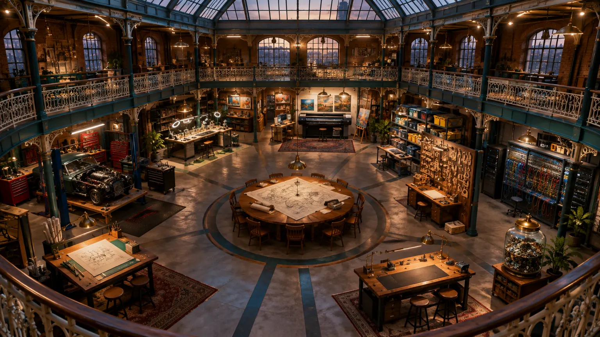
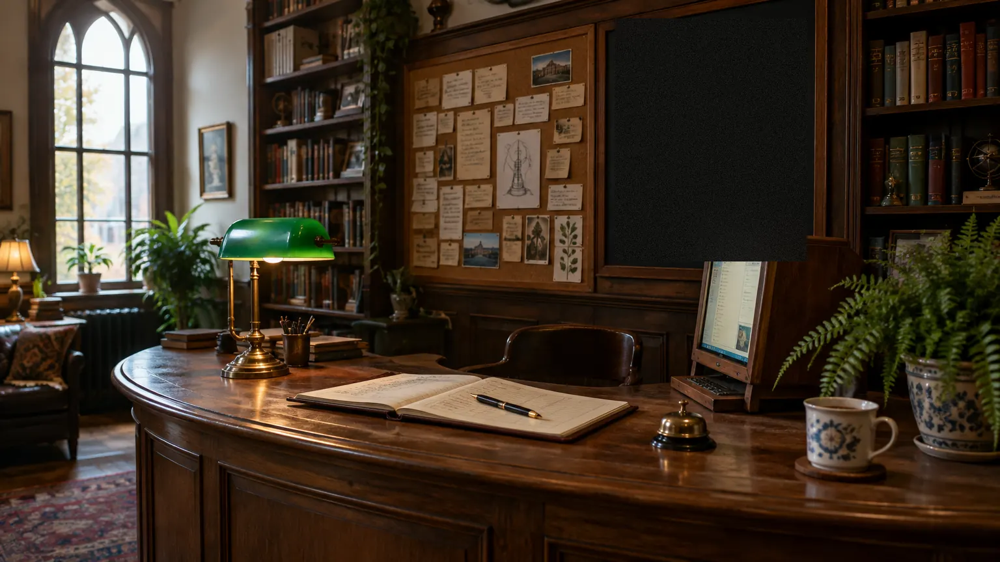
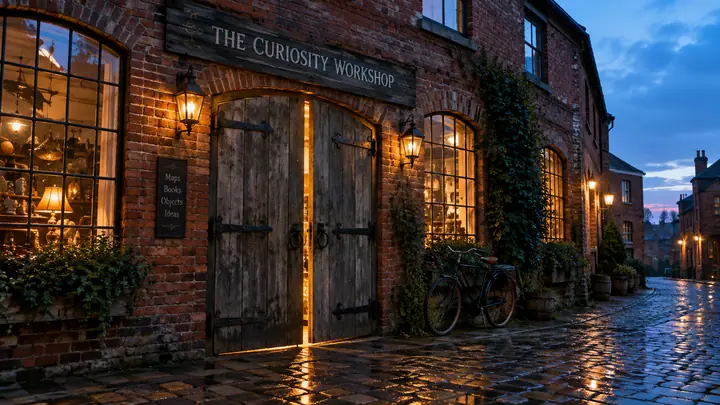
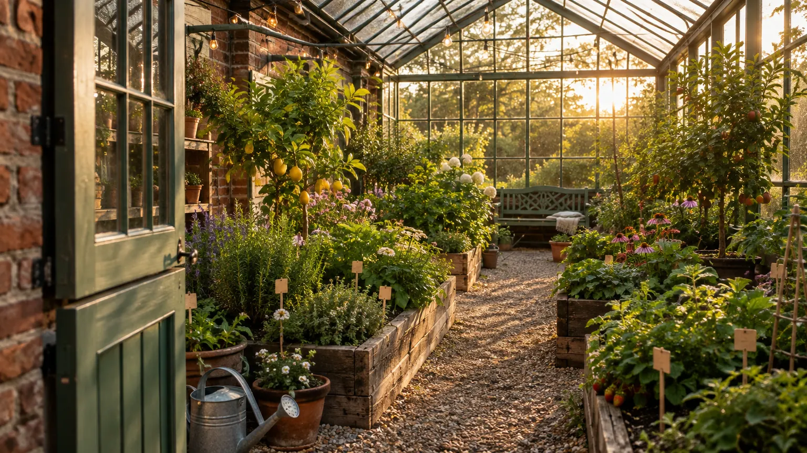

myclaudelab · a family workshop
Some rooms teach you. This one lets you make.
A workshop for learning Claude, from your very first prompt to the top 10% of people who use it. Scroll to step inside.
Thirteen benches
Every bench is a different Claude tool.
Walk up, watch it done, build something real in your own Claude, then check your work before it leaves the shop.
Three arcs
From hand tools to work that runs while you sleep.
Hand Tools shape one answer. Power Tools make things you keep. Shop Automation teaches Claude once, for good.
The Lab Director
The board changes every week.
New lessons, new recipes and a new word from the Director at four benches. The workshop keeps growing, and so will you.

myclaudelab · a family workshop
Some rooms teach you. This one lets you make.
A workshop for learning Claude, from your very first prompt to the top 10% of people who use it. Thirteen benches on three arcs, a Lab Director, and a board that changes every week.
The Hall
Pick a bench. Any bench.
Everyone starts somewhere different. Tap a glowing light to walk over, or follow your path. The Lab Director waits at the benches marked “Director”.
Swipe sideways to look around the hall.
The Lab Director's Desk
This week in the workshop.
The chalkboard is wiped and rewritten every week. Check in here when you arrive.
On the chalkboard
Your Path
From Visitor to Master Maker.
Five rungs, each a real step up in how you work with Claude. Master Makers sit in the top 10%: Claude works for them while they're away, and they can tell good work from confident nonsense.
The Recipe Box
Prompts that worked, written down.
Copy one, fill in the [brackets], paste it into Claude. New cards arrive every week.
The Card Catalog
Lessons, reels and the library.
Every lesson is checked against an official Anthropic page. The Replay Theater plays tip videos the family has collected.
Replay Theater
Community videos from the family's Treasure Chest. Fun and useful, but check anything important at the bench's official source.

Through the Dutch door
The Garden.
Every finished build gets planted here with who made it and where. Sprouts for Spark, leaves for Build, blooms for Invent.